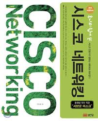

이더넷(Ethernet)
네트워킹 방식에는 아래와 같은 애들이 존재한다.
- FDDI
- ATM
- Token Ring
- Ethernet
이더넷 말고도 전공 시간에 배웠는데 다 까먹었다.
전공 시간에는 이더넷에 대해서는 잘 안 배우고 CSMA/CD 방식에 대해서만 배웠는데 이더넷과 연관이 있다고 하니 뭔가 와닿는다.
여튼 위와 같이 여러 네트워킹 방식이 존재하고 어떤 네트워킹 방식을 쓰느냐에 따라서 랜카드에서 모든 네트워크 장비가 달라진다.
우리가 쓰는 대부분의 네트워킹 방식은 이더넷 방식을 쓴다고 이해하면 된다.
그래서 LAN 카드를 Ethernet Card, NIC(Network Interface Card) 등등으로도 많이 부른다.
이 이더넷의 큰 특징 중 하나가 CSMA/CD(Carrier Sense Multiple Access/Collision Detection) 프로토콜을 이용한다는 것이다.
- Carrier Sense: 네트워크 상에서 통신이 일어나고 있는지, 신호를 감지
- Multiple Access: 두 대 이상의 장비에서 네트워크 상에 동시에 통신을 시도하는 경우
- Collision Detection: Multiple Access의 경우 충돌(Collision)이 발생하는데 이를 감지(Detection)하는 것
Collision Detection이 발생하면 체감 할 수 없을 정도로 짧은 랜덤한 시간동안 대기를 한 후 재시도하게 된다.
이더넷의 특성 상 충돌이 발생하는 것은 자연스럽고, 충돌이 발생하면 계속해서 대기 후 재전송을 하게 된다.
네트워크에 연결된 호스트가 많을 수록 충돌은 자주 발생하고 이런 단점을 해결하고자 콜리전 도메인(충돌이 발생하는 범위)을 줄이는 방식으로 해결이 가능하다.
MAC(Media Access Control) Address
어따 써먹는 놈인지 참 궁금했다.
IP 주소만 있으면 장비 찾아가지 뭐하러 MAC Address를 사용하는지 이해가 안 갔다.
이더넷 카드에는 전 세계에서 고유한 주소인 MAC Address가 부여되고, 6바이트(48비트)의 16진수로 표현되고,
하이픈(-), 점(.), 콜론(:)을 구분자로 표기하며 앞의 24비트는 이더넷 카드 제조 업체의 코드를 의미하고, 뒤의 24비트는 일련번호를 나타낸다.
MAC Address는 절대 변하지 않으므로 Physical Address라고 부르기도 하고, 어떻게 보면 전세계에서 유일하고, 식별 가능한 주소이기 때문에 개인정보로 취급되기도 한다.
이제 진짜 MAC Address를 왜 쓰는지 알아보자.
우선 IP 주소만 있어도 통신은 일어날 것 같다.
하지만 IP가 속한 L3(Network Layer)를 보면 다양한 프로토콜이 존재하고,
IPX(Internetwork Packet Exchange)를 보면 IP 주소를 전혀 사용하지 않는다.
물론 IPX는 TCP/IP Stack에는 속하지 않지만 엄밀히 IP 프로토콜과 동등한 레이어의 프로토콜이다.
즉 IPX를 통해서 패킷을 원하는 장비에까지 전달이 가능하다는 소리이다.
이런 경우에는 IP 주소가 없기 때문에 IP 주소가 속한 L3보다 더 아랫단에서 컨트롤 가능한 주소를 가지고 통신해야한다.
그러기 위해서 L1(Physical Layer)에 속하는 이더넷 카드에 존재하는 MAC Address를 가지고 통신을 하면 된다.
위와 같은 이유로 사실 내부적으로 통신을 할 때는 IP 주소를 MAC Address로 변경하는 작업을 수행해서 MAC Address로 통신을 하게 되는 것이다.
IP -> MAC Address는 ARP(Address Resolution Protocol)를 이용하고, 반대인 MAC Address -> IP의 경우에는 RARP(Reverse ARP)를 이용하게 된다.
통신은 두 가지 경우로 나눌 수 있고 각 경우 별로 MAC Address를 어떻게 알아내는지 알아보자.
- 같은 네트워크에 있는 호스트끼리 통신하는 경우
먼저 해당 IP의 MAC Address를 알려달라는 브로드캐스트를 날리게 된다.
다른 호스트들은 하던 작업을 멈추고 자신의 IP 주소와 일치하는지 확인하고, 일치하지 않으면 무시한다.
일치하면 자신의 MAC Address를 담아서 응답하고, 해당 MAC Address를 통해서 통신이 이루어진다. - 다른 네트워크에 있는 호스트끼리 통신하는 경우
먼저 해당 IP의 MAC Address를 알려달라는 브로드캐스트를 날리게 된다.
다른 호스트들은 하던 작업을 멈추고 자신의 IP 주소와 일치하는지 확인하고, 일치하지 않으면 무시한다.
아무도 응답을 안 해주니까 라우터 A가 자신의 MAC Address를 알려주고, 자신이 대신해서 전달해주겠다고 한다.
그럼 목적지를 라우터 A의 MAC Address로 정하고 패킷을 날리고, 해당 라우터 A는 또 해당 IP가 존재하는 라우터 B를 찾게 된다.
라우터 B를 찾았으면 목적지를 라우터 B의 MAC Address로 정하고 라우터 B에게 패킷 전달을 위임한다.
이제 라우터 B는 브로드캐스트를 날려서 해당 IP의 MAC Address를 획득하고, 해당 MAC Address를 가지고 통신이 이루어진다.
Unicast
1:1 통신을 말하며 대부분의 통신이 이러한 방식으로 이루어진다.
전송되는 프레임 안에 목적지 MAC Address를 넣는다.
유니캐스트로 프레임을 날려도 다이렉트로 해당 MAC Address를 가진 장비에게 전달되는 게 아니라 로컬 이더넷의 기본 특성이
네트워크에 존재하는 모든 호스트에게 정보를 날리는 Shared 방식이라서 모든 호스트에게 일단 프레임이 전달된다.
해당 프레임을 받은 호스트는 목적지 MAC Address가 자신이 가지고 있는 Ethernet Card의 MAC Address와 비교해서 다르면 해당 프레임을 버린다.
Ethernet Card에서 비교가 가능하기 때문에 CPU까지 해당 프레임을 올릴 필요가 없어서 PC의 성능 저하를 유발하지 않는다.
Broadcast
동일한 네트워크에 존재하는 모든 호스트와 통신을 하는 방식이다.
라우터 밖으로 나가지 않는 범위를 뜻하며 이 범위를 브로드캐스트 도메인이라고 부른다.
브로드캐스트는 거부 권한이 없기 때문에 무조건 프레임을 받아야한다.
해당 프레임을 받아서 인터럽트를 걸고 CPU로 해당 프레임을 올려서 프레임을 버릴지 말지 결정하게 된다.
따라서 이 경우에는 네트워크 트래픽/성능 저하를 유발하기도 하지만 해당 PC의 성능 저하도 유발하기 때문에 남발해선 안 된다.
브로드캐스트는 IP 주소로 MAC Address를 알아내는 ARP 프로토콜이나 새로 연결한 호스트에게 IP를 할당하기 위해
남은 IP 주소를 알아내고 자동 할당해주는 DHCP 프로토콜 등등에서 쓰인다.
Multicast
브로드캐스트는 통신 거부 권한이 없는데 멀티캐스트는 그룹을 만들어서 그 그룹을 구독하고,
그룹(에 속해있는 구독자)에 프레임을 날리는 방식이다.
더 이상 통신을 하고 싶지 않다면 구독 해제하면 된다.